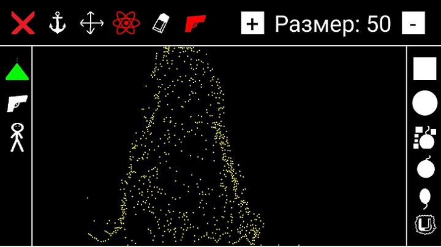

Об игре:
Эта физическая игра в жанре "Песочница".
Эту игру я придумал совсем случайно, когда я разрабатывал другой проект.
В голову мне пришла идея сделать физическую песочницу, в которой игрок сможет
сделать всё что угодно. В первой версии можно были только квадрат и круг,
потом я начал добавлять другие объекты, которые есть в игре сейчас.
Эту игру я буду стараться развивать, исправлять разные недоразумения.
Если найдёте баг, пишите на yaribakal@gmail.com
---
Скриншоты из игры:


YouTube канал создателя игры:
Vompyz